Sightseeing of Guido Coal Mine
Two excellently preserved mining levels are waiting for you 170 and 320 metres below the ground. You will go there with the authentic elevator (in Silesia called “szola”), the same that is used in active coal mines. The express ride in darkness takes just several dozen of seconds! Read more ...
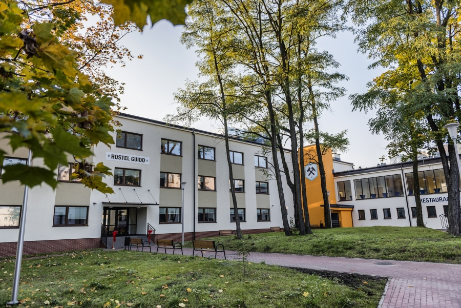
Guido Hostel
Looking for a nice place to stay for a night afert visiting The Guido Mine? Guido Hostel is a modern accommodation and conference complex located in the vicinity of Zabrze City downtown, directly at the Guido Coal Mine.
...
Read more ...
Guido. Sightseeing of guido mine.
Sightseeing of Guido Coal Mine
Two excellently preserved mining levels are waiting for you 170 and 320 metres below the ground. You will go there with the authentic elevator (in Silesia called “szola”), the same that is used in active coal mines. The express ride in darkness takes just several dozen of seconds! Read more ...
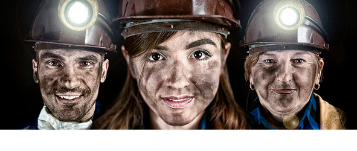
Guido team
25 hours ago
Sightseeing of Guido Coal Mine
Are you ready for the underground adventure?
Two excellently preserved mining levels are waiting for you 170 and 320 metres below the surface. You will go there with the authentic elevator (in Silesia called “shola”), the same that is used in active coal mines. The express ride in darkness takes just several dozen of seconds!
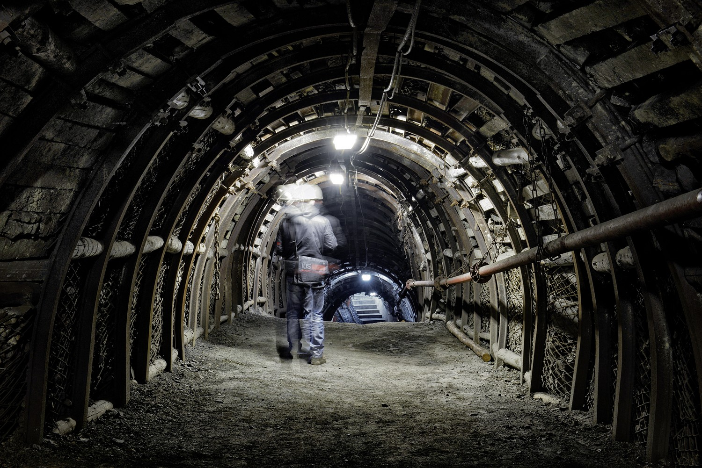
First of all, you will visit the oldest available regions of Guido Coal Mine, at the 170 level. The guide will tell you about the toil of work from the beginning of the 20th century which was the time of mechanization, technological progress but also the time the strongest cult of St. Barbara in Silesian coal mining. It is her who is the central figure in this part of the tour.
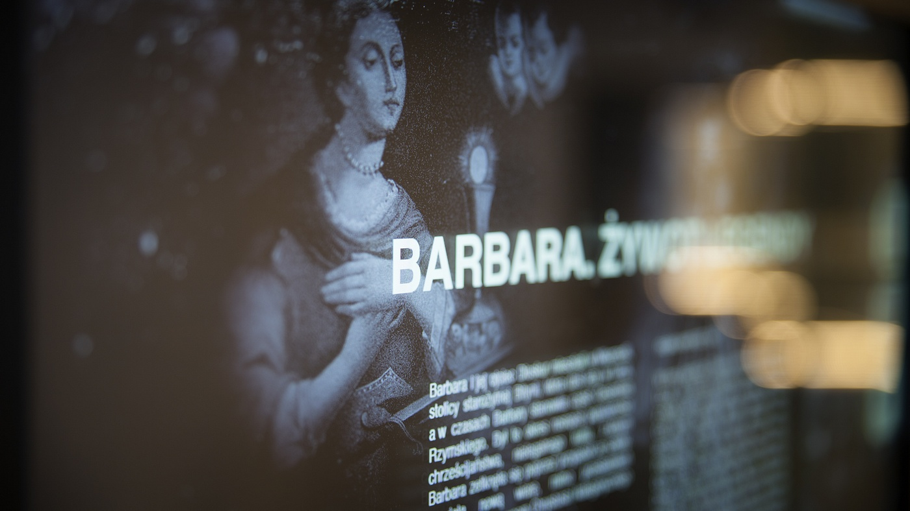
During the tour of the 170 level you will look into originally preserved horse stables and you will learn about the role that these animals played in the history of mining. You will also see what type of dangers wait for the miners working underground and thanks to the multimedia effects almost “feel” the first-hand experience on yourself.
The main point of the 170 level is St. Barbara’s chapel which catches attention thanks to the architectural qualities: raw brick, steel constructions and industrial climate are mixed with monumentality which is well-known from neo-gothic brick churches so often appearing in Silesia.
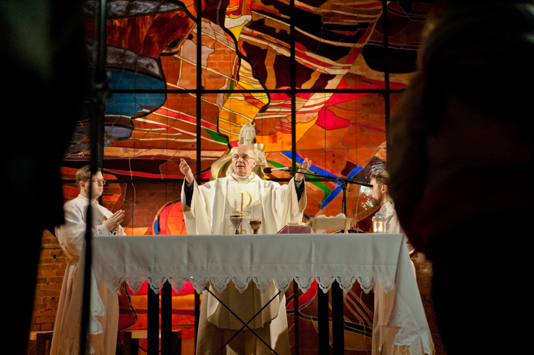
The biggest attractions of the 320 level are the large scale mining machines presented in operation and the ride in suspended electric rail. The experience at 320 level is mostly connected with exploring the development of mining technology from the end of the 19th century up to modern times.
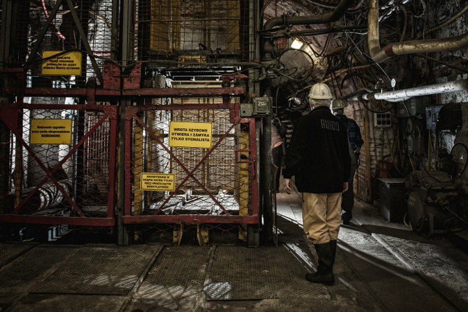
Here you will learn how the hard work of a coal miner looks like, in what conditions the coal is mined and what mother nature can do to with the tunnels if they are not protected with support. You will go through a maze of mining excavations – at some points it will be steep and dark! Remember that the protective helmet is to be worn on the whole touristic route.
Although Guido Coal Mine stopped its coal extraction long time ago, there is still some coal left. During the tour you’ll see it at least four times, in its raw form – seams that are two meters thick.
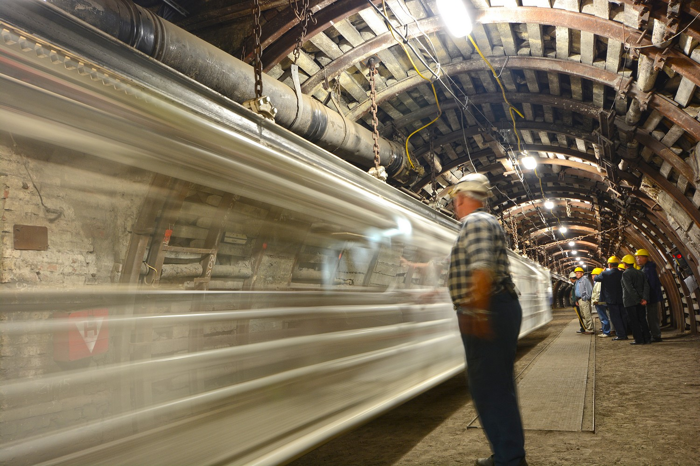
A part of the route at 320 level will be covered with suspended electric rail. It is the only rail of this type in the world that has been made available for the tourists! It will take You to the working area of two machines, roadheader and longwall coal-cutting machine. From a very close perspective you will see how these powerful rock and coal mining machines at work.
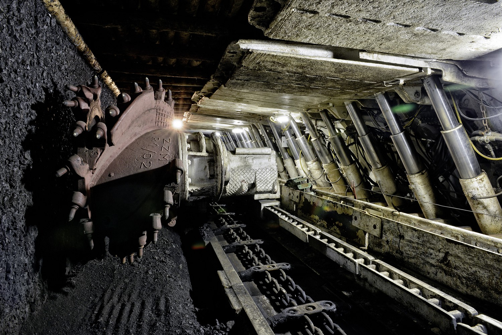
The tour of Guido Coal Mine ends in the deepest located pub in Europe! For adults, the Pump Hall offers specialty of the house, “Guido” beer – a fantastic drink, brewed by local brewery from Gliwice, coming in two versions: lager and stout. In the Pump Hall you can also drink a cup of coffee, buy some souvenirs or try Silesian kitchen.
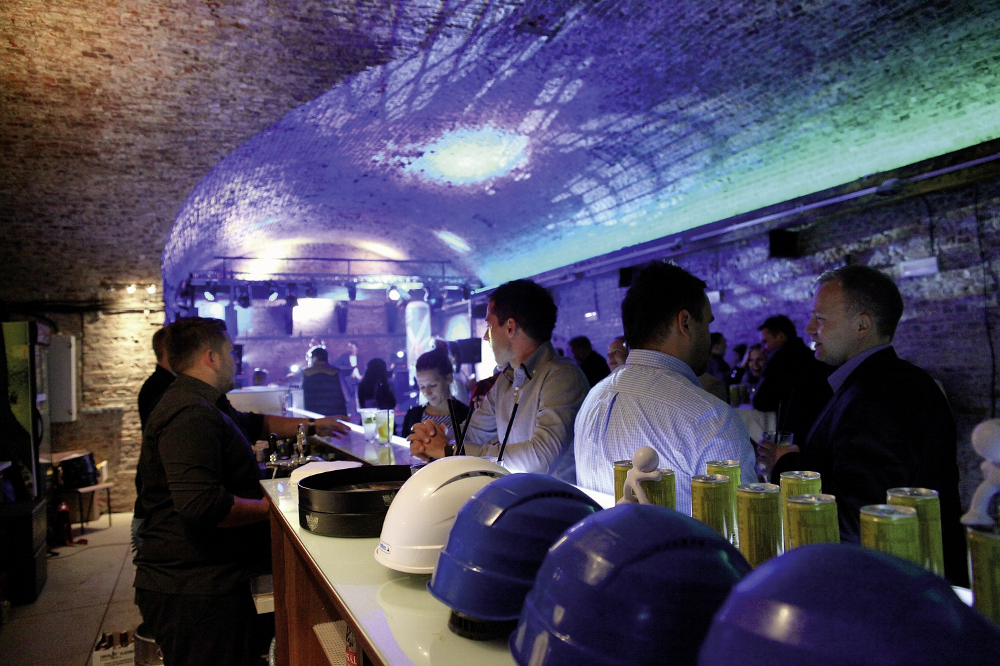
Worth knowing
- Tour duration: 2,5 hours
- Route length: 3,5 km
- Age limitation: 6 years (we invite groups with younger children to the underground route in Queen Louise Coal Mine)
- The temperature underground is between 13 and 16 degrees of Celsius, independently from the season
- Proper clothing and shoes with flat sole are recommended
- Due to difference in the air pressure, we do not recommend this tour for people with serious diseases
- Pregnant women should consult doctor before taking a tour
The Dark of the Mine
The Dark of the Mine is the journey to deepest and rawest regions of Guido Coal Mine. The tour guide will take you to 355 level and the last active longwall, mined in the second half of the 20th century. You will see the coal mine preserved in the state it was left by miners over twenty years ago.
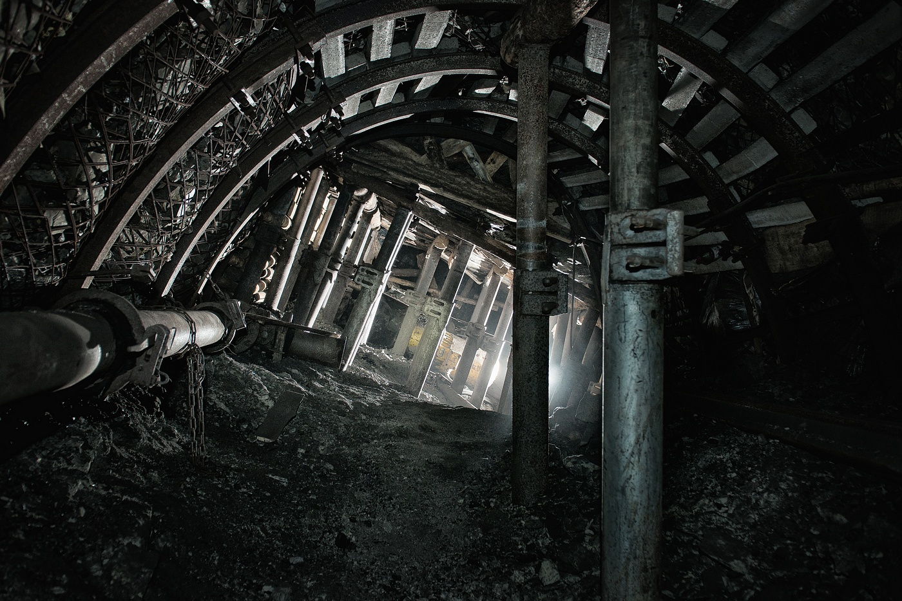
Be ready!
We recommend the Dark of the Mine tour for the people who are physically fit. The passage degree difficulty is similar with mountain rages outing. We also recommend trekking shoes and the proper clothing for sightseeing of the raw mine (possibility to get dirty). The temperature on the route is more or less 20 degrees of Celsius.
Sightseeing
Ride down with the elevator, one and a half kilometre through mining galleries, steep dip-headings, raises, tight passages – this is the scenery on the 355 level. You will be accompanied by chain conveyors, pipelines used for pumping the filling and a mass of mining steel. Over your head you will see stone-dust barriers which were used to protect the other part of the mine from coal dust explosion. The tour guide will tell you the most interesting stories connected to coal mining and underground work of miners. You will learn how much effort it takes to mine in darkness and dustiness.
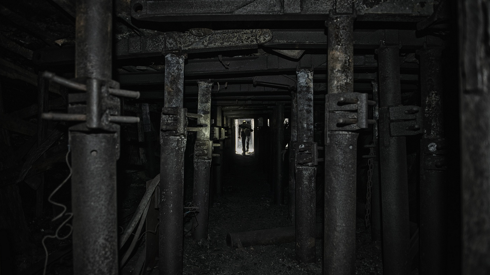
Longwall
The main point of the 355 level is a tight passage through very steep and over one hundred metre long wall. The roof in this place is supported by thickly placed props of Valent type, popularly called “walencioki” in Silesia. The coal seam is within reach here. Historically, this is the last place of mining in Guido Coal Mine.
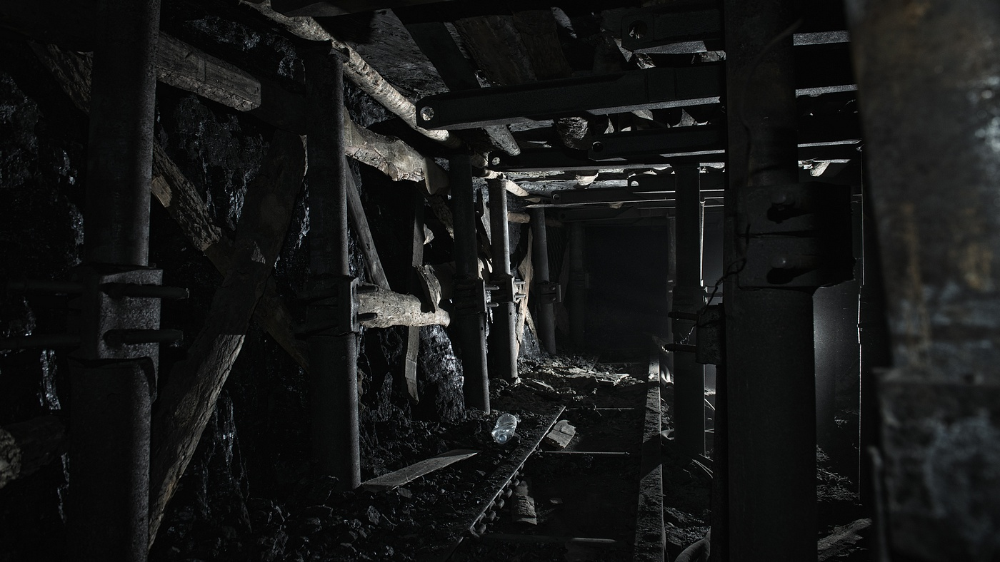
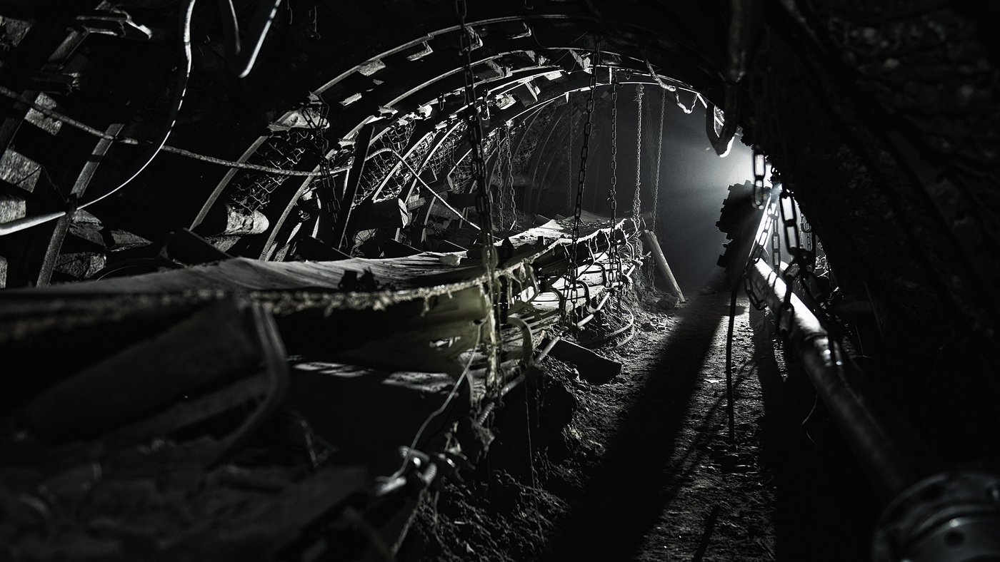
Darkness
In this part of the mine, the silence is so deep that you can hear your own heartbeat. Blackness coming from everywhere makes you aware of the fact that you are deep in the heart of the earth. Impenetrable darkness is only dispersed by a sheaf of light of personal mining lamp. In its brightness, the steel machines and devices take fantastic shapes. Imagination likes to play tricks here.
By suspended rail to the Pump Hall
After leaving the longwall your condition will be tested by a steep dip-heading towards shallower regions of a mine. From the 355 level you will go to a rail station of suspended rail which will take you near the underground K8 Zone. The tour ends in the Pump Hall, the deepest located pub in Europe.
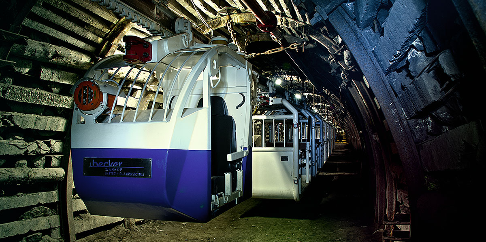
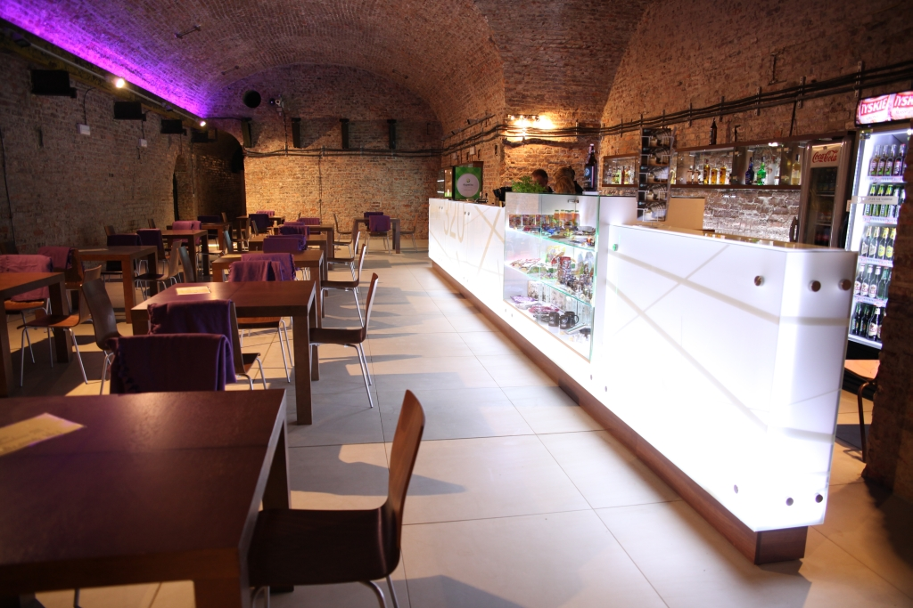
Worth knowing:
- The tour is available for the people over 12 years of age
- Tour duration: about 2,5 h
- We recommend you to take comfortable, touristic shoes
- The route recommended for the physically fit people
Shift
Do you want to feel like a real miner on a shift? Are you ready to do a number of mining works in dark galleries of a coal mine? Before travelling down you will receive full equipment and frontman’s outfit. Then, you will go to the deepest regions of Guido Coal Mine – the lowest point of the route is 355 metres below the surface of the ground! The route goes through a mining longwall No. 4, mined in training and research purposes in the second half of the 20th century. Shift is a proposition for the people who are ready for a big effort and a big dose of sensations.
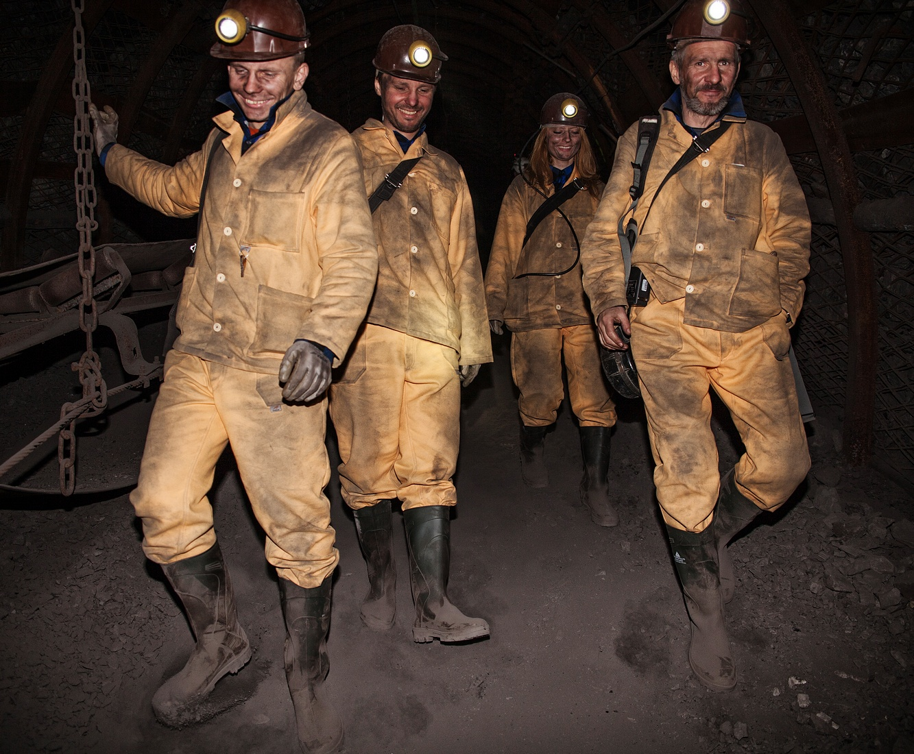
Equipment
Before travelling down to the inoperative mining flat at 355 level you must get necessary personal protective outfit: foreman’s wear, a flannel shirt, wellingtons, a helmet and a lamp with a protective cover. Moments later, a cager opens the elevator’s door before you and you go 320 meters underground where the journey to the deepest places of a mine begins.
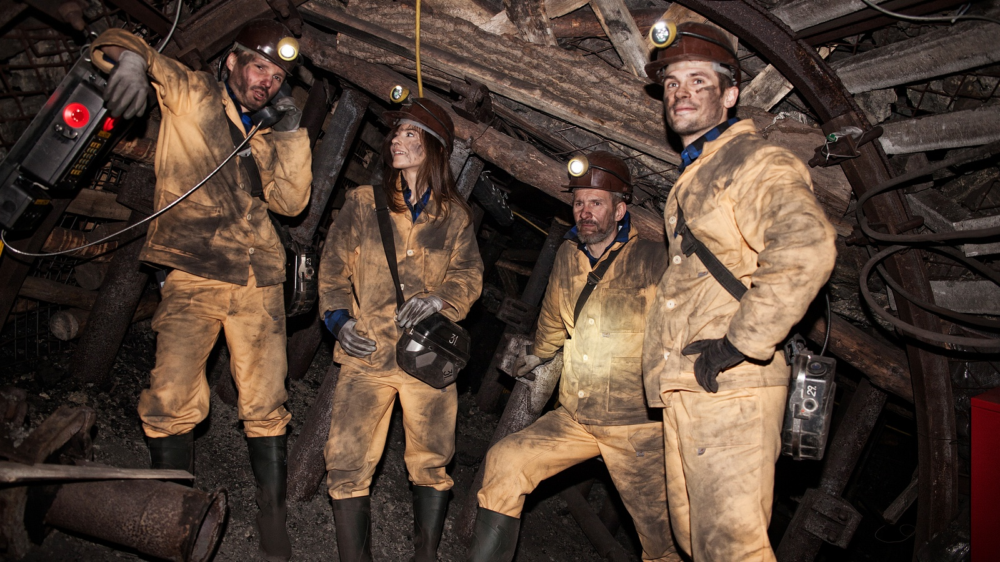
Shift
Mining headings for one kilometre and a half, dip-headings of considerable slope, raises, declines and tight, restricted passages are the scenery of the route on the level 355m. You will be accompanied by scraper conveyors, pipelines used for pumping the filing and multitude of mining steel. Over your head you will notice stone-dust barriers which were to prevent the other part of the mine from a possible explosion of pulverised coal. A foreman will tell you to shift over a pipeline weighing dozens of kilograms, to erect a band conveyor, to dimension a wooden prop, to install a ventilation pipe or other works that you will be told to perform. You will convince yourself that effort made in tightness and dustiness costs quite a lot.
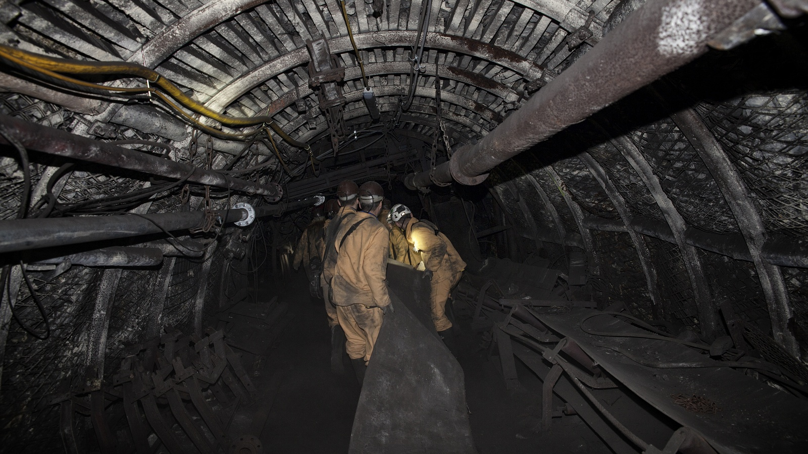
A heading
The climax of a mining shift on the level of 355m is a tight passage running for over one hundred metre coal seam of considerable inclination. The roof in that place is supported by thickly spaced props of Valent type, popularly called "valencioki" in Silesia. The coal seam is placed here within reach. Historically this is the last mining place in the Guido Coal Mine.
The Dark
Silence so deep reigns in this part of the mine that you can hear your own heartbeat. Advancing blackness from everywhere makes you aware that you are deeply in the very heart of the earth. Impenetrable darkness is solely diffused by a beam of light coming from a personal mining lamp. In its brightness the steel machinery and equipment take fabulous shapes. Imagination likes playing tricks here
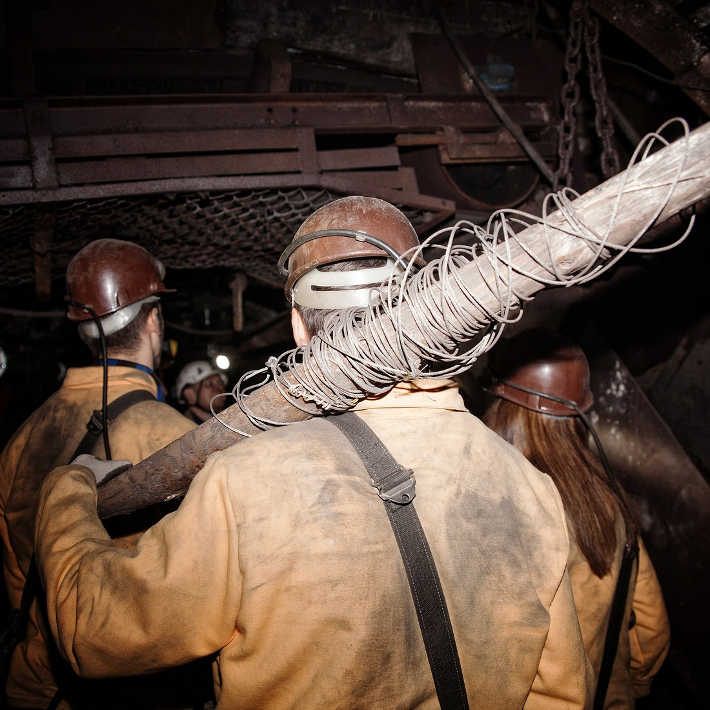
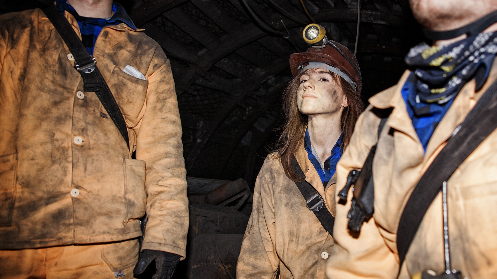
Off we go for a beer and to the baths!
Leaving the mining face, your physical condition will be tested by a steep dip-heading towards shallower areas of the Guido Coal Mine. From the mining shift you will go to a pub located in the Pumps House - you will recover there, thanks to superb "Guido" beer and other specialities of the House. Going back to the surface, your legs will carry You themselves under a "fresh" shower in mining baths.
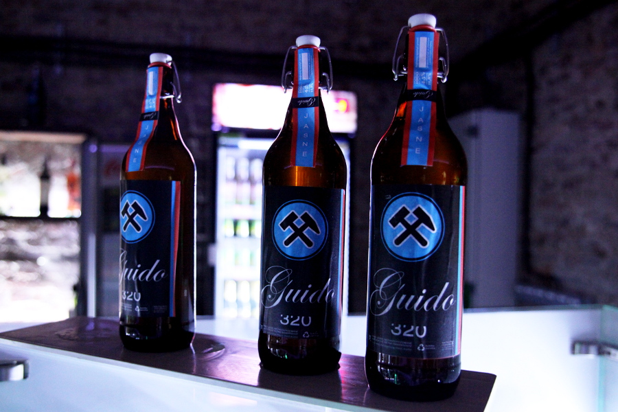
Additional information:
- Duration: 3,5 h,
- The Route is for adults,
- The Route is for those of good health and physical condition
- Pre-reservation is absolutely necessary
Eventy dla firm 320 metrów pod ziemią - Kopalnia Guido (tymczasowo niedostępne)
Szukasz miejsca na firmowy event i team-building? Z nami przeżyjesz górniczą szychtę, rozegrasz partię w turbogolfa w podziemiach zabytkowej kopalni. Zapewniamy świetną zabawę, catering, integrację i nietypową przestrzeń do organizacji szkoleń - wszystko 320 metrów pod ziemią w Kopalni Guido!
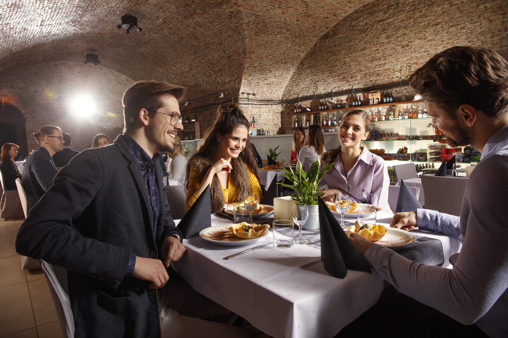
Firmowy team building w kopalni?
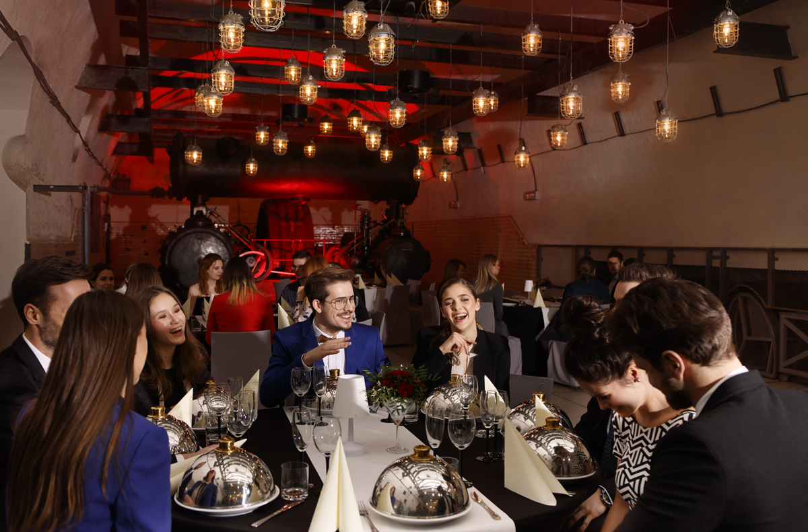
Nic tak nie integruje jak wspólna przygoda. My o tym wiemy! Zdecyduj się na wyprawę w najgłębsze rejony Kopalni Guido i poczuj jak prawdziwy górnik – wyposażymy cię w kompletny ekwipunek górniczy, a podczas Szychty na poziomie 355 sztygar zleci Ci szereg zadań do wykonania, od skręcania rurociągu przeciwpożarowego aż do podcinania drewnianych stempli. Pod ziemią możesz także rozegrać partię w ekstremalnego turbogolfa. O dostępne eventy zapytaj nasze konsultantki.
A może ciekawe miejsce na szkolenie?
Na poziomie 320 mamy do dyspozycji cztery górnicze komory – Komorę Badawczą nr 8, Komorę Kompresorów, Halę Pomp i Warsztat Mechaniczny. Zapewniamy catering, dostępność multimediów, łączność Wi-Fi i przede wszystkim świetny, industrialny klimat zabytkowej kopalni. Nasze komory mogą pomieścić od 80 do 180 osób każda. Każdą z komór możesz wynająć i zorganizować w niej szkolenie, konferencję lub po prostu udaną imprezę.
Jak wyglądają imprezy dla firm? Przykładowy scenariusz
- Przyjazd do Kopalni Guido, pobranie kasków i lamp górniczych
- Zjazd 320 metrów pod ziemię i udział w szkoleniu w Warsztacie Mechanicznym
- Czas na przygodę! Zejście na poziom 355 i udział w górniczej szychcie
- Koniec szychty i śląski obiad w Hali Pomp
- Czas wolny, możliwość odświeżenia się w łaźni górniczej (powierzchnia)
- Powrót na poziom 320 i impreza integracyjna z DJ’em w Komorze Badawczej nr 8
- Nocleg w Hostelu Guido lub jednym z hotelów partnerskich
Wybierz to, co Cię najbardziej interesuje, a my pomożemy Ci to zorganizować!
- Zwiedź podziemne trasy Kopalni Guido
- Zdecyduj się na team-building i weź udział w eventach: górnicza szychta, turbogolf i inne
- Wynajmij jedną z podziemnych komór
- Zleć nam organizację imprezy integracyjnej (posiadamy doświadczenie zdobyte podczas organizacji ponad tysiąca podziemnych imprez!)
- Zamów pyszny catering
- Zarezerwuj nocleg w bezpośrednim sąsiedztwie Kopalni Guido (Hostel Guido, Hotel Diament, Willa Ambasador)
Kopalniane wesele w stylu industrialnym
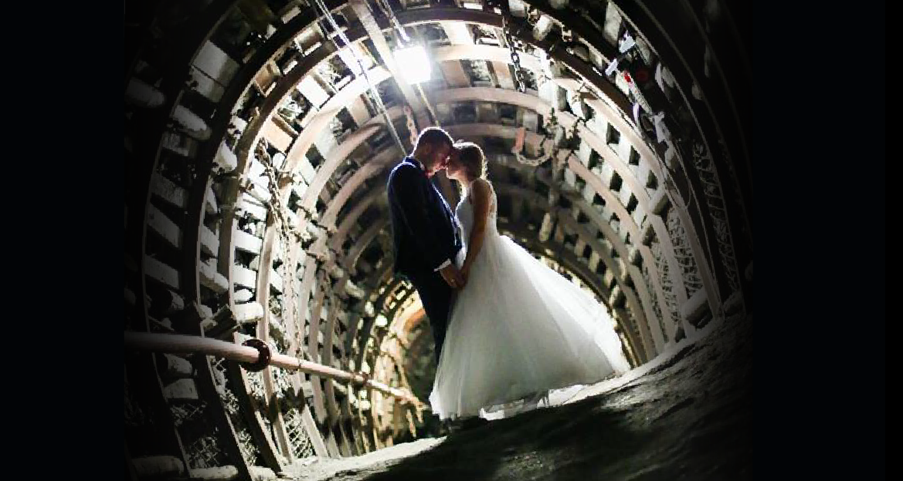
Wesele w stylu industrialnym?
Kopalnia Guido to idealne miejsce na zorganizowanie wesela, nie wpisującego się w żadne ramy. 320 metrów pod ziemią czekają na Ciebie pomieszczenia, które pozwolą Ci spełnić marzenia. Więcej tutaj.
Skosztuj regionalnego piwa Guido w Hali Pomp
Hala Pomp to prawdopodobnie najgłębiej położony pub w Europie! Serwujemy w nim piwo Guido, warzone specjalnie na nasze zamówienie przez regionalny browar z Gliwic. Jasne piwo Guido jest niepasteryzowane, ma delikatny aromat, złotą, nieznacznie mętnawą barwę i stonowany smak z wyczuwalną goryczką, uzupełnioną odcieniami miodowych kwiatów, zbóż, siana i orzechów. Ciemne piwo Guido to specjał dla smakoszy, warzony z mieszkanki aż siedmiu słodów jęczmiennych z dodatkiem słodów wędzonych. Piwo Guido to propozycja dla osób pełnoletnich. Dbamy o naszych gości, głodnego Cię nie wypuścimy
Do nas łatwo dojechać
Kopalnia Guido jest położona w samym sercu Śląska, o dwie minuty jazdy od Drogowej Trasy Średnicowej (DTŚ) i pięć minut od autostrady A4. Mamy także własny, wewnętrzny parking na 60 samochodów i 6 stanowisk autokarowych.
Czas dojazdu:
Katowice: 16 minut (18 km)
Kraków: 1 godz. 15 minut (100 km)
Wrocław: 1 godz. 45 minut (180 km)
Warszawa: 3 godz. 30 minut (300 km)
Zainteresowany? Zadzwoń i zapytaj o szczegółową ofertę!
Bożena Blacha-Stachowicz
kom. 728 406 116, e-mail: bblacha-stachowicz@muzeumgornictwa.pl
Agnieszka Pietrzak
kom. 506 101 478, e-mail: agapietrzak@muzeumgornictwa.pl
Daria Widera
kom. 728 406 138 dwidera@muzeumgornictwa.pl
.jpg)